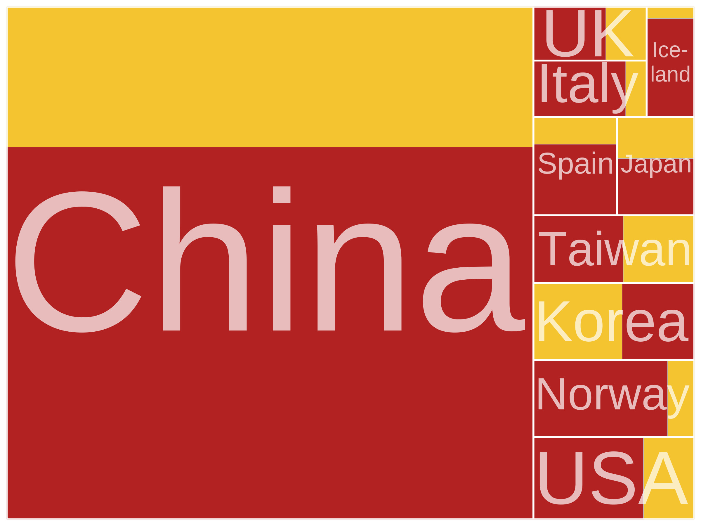
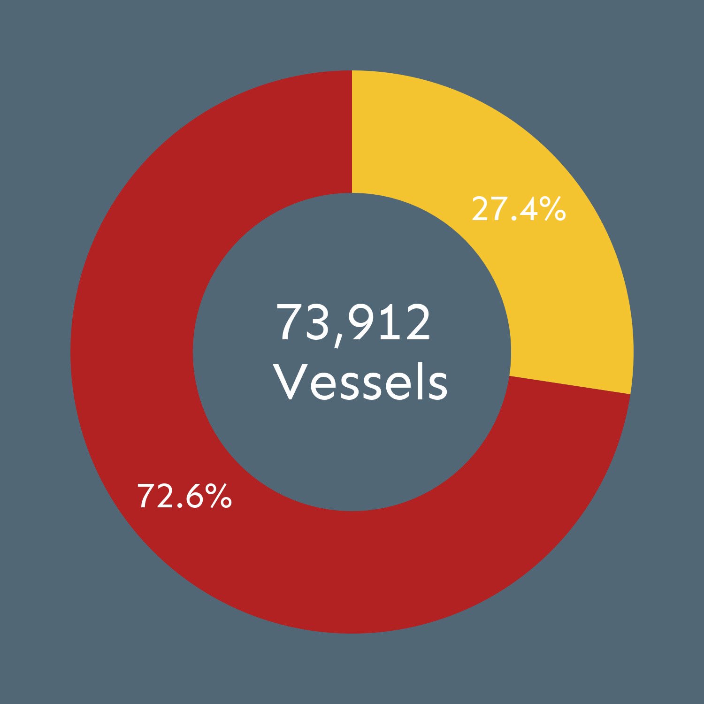
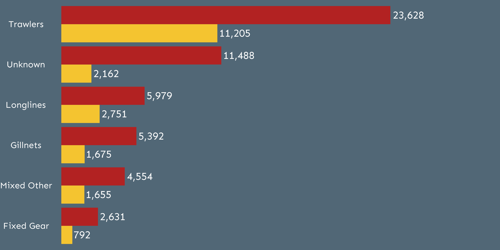
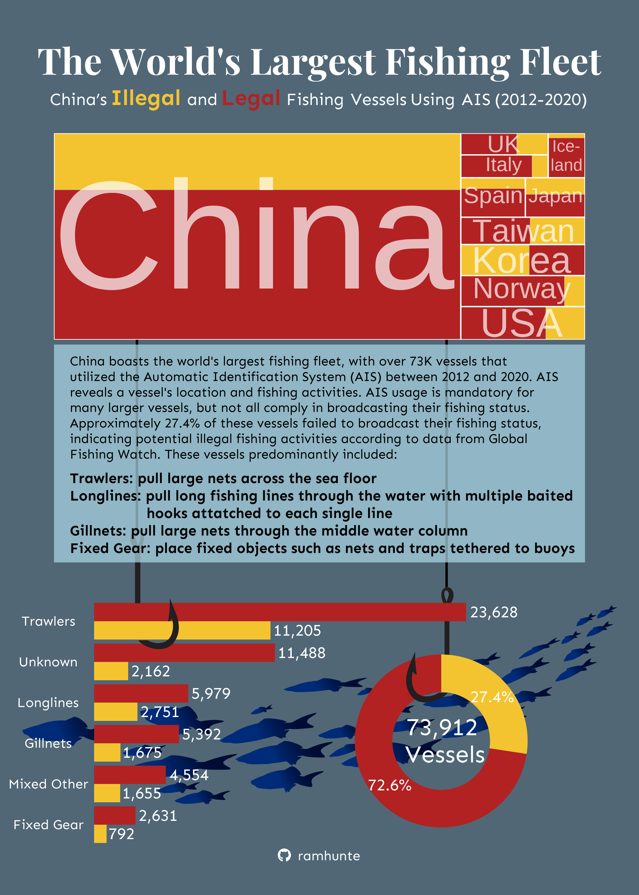

This blog post is intended to show how to create an infographic from start to finish while considering 10 different design elements along the way: graphic forms, text, themes, colors, typography, general design, data contextualization, primary message, accessibility, and diversity, equity, and inclusion (DEI). I used publically available data provided by Global Fishing Watch (GFW) to investigate and compare different aspects of China’s illegal and legal fishing fleets. While showing figures and plots individually has its relevance, stitching together a story through multiple visualizations and text by creating an infographic can be a powerful tool. It allows the reader to walk through an oftentimes artistic thought process or an idea in multiple steps rather than interperet a stand alone figure. However, it is improtant to keep in minds the draw backs that can come with infographics such as confusing the reader through too much complext visualization. Here, I will walk you through how I created an artistic, simple, yet compelling story on China’s fishing vessels through a tree map, donut chart, and barchart.
About the Data
This data set I used is publicly available on the Global Fishing Watch (Data Link) website. The website contains a number of different data sets on global fishing vessels with the goal of trying highlighting illegal fishing vessel activity. The specific data set I used was called fishing-vessels-v2.csv which is the most up-to-date public data set on predicted legal/illegal fishing vessel status. It was generated by GFW using machine learning to predict which vessels were actively fishing regardless of whether or not they identified as a legal fishing vessel. The data identifies global fishing vessels that used Automatic Identification System (AIS) from 2012-2020 by country. It contains a number of different variables describing the fishing vessel class, engine power, length, weight, fishing time by year, country, and whether or not it was a self reported AIS fishing vessel. This data allows us to find which vessel classes by country are using AIS around the globe and report whether they are operating legally or illegally. I primarily focused on using the variables mmsi (the maritime mobile service identity or vessel identification number), flag_gfw (the country the vessel represents), vessel_class_gfw (the predicted vessel class), and self_reported_fishing_vessel (whether the vessel broadcasts itself as a fishing vessel using AIS) as my variables of interest.
Questions
I really wanted to look at China’s illegal and legal fishing vessels at a broad scale to compare across countries and identify dominant fishing vessel classes within the fleets. I asked the following questions to do so:
1) How large are China’s illegal and legal fishing fleets using automatic identification system (AIS) compared to the next 9 largest countries’?
2) What percentage of China’s fleet using AIS legally reported its fishing status between 2012-2020?
3) What were the total number of illegal and legal fishing vessels by class using AIS between 2012-2020?
Set up
Here I loaded some packages, imported some fonts and icons, and picked some colors for the theme of the infographic:
code
# loading necessary packageslibrary(tidyverse)library(janitor)library(showtext) # for grabbing fontslibrary(png)library(grid)library(ggpubr)library(patchwork)library(treemapify)library(ggtext)library(glue)library(here)# custom icons and fonts fonts font_add(family ="Font Awesome 6 Brands",regular =here(rootdir, "otfs/Font-Awesome-6-Brands-Regular-400.otf"))font_add_google(name ="Sen", family ="sen")font_add_google(name ="Playfair Display", family ="play")showtext_auto() # for importing fonts# github icongithub_icon <-""github_username <-"ramhunte"gh_caption <- glue::glue("<span style='font-family:\"Font Awesome 6 Brands\";'>{github_icon};</span> <span style='color: white'>{github_username}</span>" )# custom color palettepal <-c(light_text ="#f4c430",dark_text ="#b22222",bg ="#516776")
Data Wrangling
Before I can create any plots, I need to wrangle and clean the data so that it can be used for the three different plots:
code
# Cleaning and warngling data # master data sheetboats <-read.csv(here(rootdir, "data/fishing-vessels-v2.csv"))# clean sheetboats_clean <- boats %>%#cleaning namesclean_names() %>%# selecting specific columnsselect(mmsi, flag_gfw, vessel_class_gfw, tonnage_gt_gfw, self_reported_fishing_vessel, fishing_hours_2012:fishing_hours_2020) %>%# filtering out na valuesfilter(!is.na(flag_gfw)) %>%# changing class of variablesmutate(mmsi =as.character(mmsi),flag_gfw =as.factor(flag_gfw)) %>%#finding proportion of boats that are self reported by countrygroup_by(flag_gfw) %>%mutate(prop_self_rep =mean(self_reported_fishing_vessel, na.rm =TRUE),n_vessels =n()) %>%#moving to column #4relocate(prop_self_rep, .after =4) %>%ungroup() %>%pivot_longer(cols =starts_with("fishing"),names_to ="year",values_to ="fishing_time") %>%mutate(year =str_remove(year, "fishing_hours_"))# ---------------- Barchart Data --------------------barchart_df <- boats_clean %>%filter(flag_gfw =="CHN",!is.na(self_reported_fishing_vessel)) %>%# renaming vessels to othermutate(vessel_class_gfw =ifelse(vessel_class_gfw %in%c("trawlers", "fishing", "set_gillnets", "set_longlines", "fixed_gear"), vessel_class_gfw, "other")) %>%# finding the total number of vessesl by class and legalitygroup_by(mmsi, vessel_class_gfw) %>%summarise(self_reported_fishing_vessel = self_reported_fishing_vessel) %>%distinct() %>%group_by(vessel_class_gfw, self_reported_fishing_vessel) %>%summarise(count =n())# -------------- Donut Chart Data-------------------#wrangling data for a donut chartdonut_df <- boats_clean %>%filter(flag_gfw =="CHN",!is.na(self_reported_fishing_vessel)) %>%group_by(mmsi, vessel_class_gfw) %>%summarise(self_reported_fishing_vessel = self_reported_fishing_vessel) %>%# filtering just distinct number of individual vesselsdistinct() %>%group_by(self_reported_fishing_vessel) %>%summarize(count =n()) %>%mutate(self_reported_fishing_vessel =ifelse(self_reported_fishing_vessel, "Legal", "Illegal"),percentage =round(count/sum(count)*100, digits =1),ymax =cumsum(percentage),ymin =lag(ymax, default =0),labelPosition = (ymax + ymin)/2,label =paste0(percentage, "%"))# finding the total count of all chinese fishing vesselstotal_count <-format(sum(donut_df$count),big.mark =",")# ----------- Tree map data -----------------# wrangling top 10 countries by vessel count to comparetop_10 <- boats_clean %>%distinct(mmsi, flag_gfw, self_reported_fishing_vessel) %>%group_by(flag_gfw) %>%summarise(count =n()) %>%slice_max(order_by = count, n =10)# wrangling a data set for the treemap figuretree_df <- boats_clean %>%# filter to just top 10 countriesfilter(flag_gfw %in% top_10$flag_gfw,!is.na(self_reported_fishing_vessel)) %>%# only pull out distinct vesselsdistinct(mmsi, flag_gfw, self_reported_fishing_vessel) %>%group_by(flag_gfw, self_reported_fishing_vessel) %>%summarise(count =n()) %>%# rename to full countrymutate(country =case_when( flag_gfw =="CHN"~"China", flag_gfw =="ESP"~"Spain", flag_gfw =="GBR"~"UK", flag_gfw =="ISL"~paste0("Ice-","\n", "land"), flag_gfw =="ITA"~"Italy", flag_gfw =="JPN"~"Japan", flag_gfw =="KOR"~"Korea", flag_gfw =="NOR"~"Norway", flag_gfw =="TWN"~"Taiwan", flag_gfw =="USA"~"USA"))
Tree Map
Note: As in all plots, red represents legal and yellow represents illegal. I also did not include titles, subtitles, captions, or guides in any of the three stand along plots that I created as they are all going to be small pieces of a larger infographic in which these details will be communicated. However, it is critical to include these components to your visualization if they are stand alone and do not have the additional aid from the inforgraphic.
The first figure I want to create is a tree map that compares the total sizes of the top 10 countries’ illegal and legal fishing vessels using AIS between 2012 and 2020. This will answer my main question:
How large are China’s illegal and legal fishing fleets using automatic identification system (AIS) compared to the next 9 largest countries?
code
# making a tree maptree_fig <-ggplot(tree_df, aes(area = count, fill = self_reported_fishing_vessel,label = self_reported_fishing_vessel, subgroup = country)) +# labs(title = "Comparing the World's 10 Largest Fishing Fleets") +scale_fill_manual(values =c("#f4c430", "#b22222")) +geom_treemap() +geom_treemap_subgroup_border(colour ="white", size =2) +geom_treemap_subgroup_text(place ="centre", grow =TRUE,alpha =0.7, lineheight =0.3,colour ="white",size =2) +theme(panel.background =element_rect(fill ="transparent", color =NA),plot.background =element_rect(fill ="transparent", color =NA),legend.position ="none")

Donut Chart
My next plot will be a donut chart that answers our second question:
What percentage of China’s fleet using AIS legally reported its fishing status between 2012-2020?
code
# Making a donut chartdonut <-ggplot(data = donut_df, aes(ymax=ymax, ymin=ymin, xmax=4, xmin=3, fill = self_reported_fishing_vessel)) +geom_rect() +# labeling percentagesgeom_label( x=3.5, aes(y=labelPosition, label=label), size=20,color ="white",label.size =NA,family ="sen",fill =NA,lineheight =unit(.3, "lines")) +# adding annotation for total number of vesselsannotate(geom ='text', x =1.7, y =1, label =paste(total_count, "\n", "Vessels"),size =30, color ="white", lineheight =unit(.3, "lines"), family ="sen") +scale_fill_manual(values =c("#f4c430", "#b22222")) +coord_polar(theta="y") +xlim(c(1.7, 4)) +theme_void() +theme(legend.position ="none",panel.background =element_rect(fill =NA, color =NA),plot.background =element_rect(fill =NA, color =NA))# making a donut plot with colored background for displaying individuallydonut_filled <- donut +theme(panel.background =element_rect(fill = pal["bg"], color =NA),plot.background =element_rect(fill = pal["bg"], color =NA))

Barchart
My last plot will be a barchart answering the final question:
What were the total number of illegal and legal fishing vessels by class using AIS between 2012-2020?
I added value lables on here because I removed the x axis for simplicity in design. It important to make sure that as you modify or remove elements that you are making sure that information is not entirely lost as it will confuse the reader.
code
# making a barchartbarchart <-ggplot(data = barchart_df, aes(x =fct_reorder(vessel_class_gfw, count), y = count, fill = self_reported_fishing_vessel)) +# adding count text to each bargeom_text(aes(label = scales::comma(count), hjust =-0.1), color ="white", size =20,position =position_dodge(width = .9),family ="sen") +theme_void() +geom_col(position ="dodge") +labs(fill ="Self Registered", x ="", y ="") +scale_fill_manual(values =c("#f4c430", "#b22222")) +scale_y_continuous(limits =c(0, 30000)) +scale_x_discrete(labels =c("trawlers"="Trawlers", "fishing"="Unknown", "set_longlines"="Longlines","set_gillnets"="Gillnets", "other"="Mixed Other", "fixed_gear"="Fixed Gear")) +coord_flip() +theme(# note: need to make these fills as transparent for final figure when stitching together# they are colored right now so we can show the bacgkround color in the individual plotpanel.background =element_rect(fill =NA, color =NA),plot.background =element_rect(fill =NA, color =NA),# axis axis.line.x =element_blank(),axis.line.y =element_blank(),axis.text.y =element_text(color ="white", family ="sen",size =48, margin =margin(-30, -20, -50, 0)),axis.text.x =element_blank(),# legendlegend.position ="none" )# making a barchart with colored background for displaying individuallybarchart_filled <- barchart +theme(panel.background =element_rect(fill = pal["bg"], color =NA),plot.background =element_rect(fill = pal["bg"], color =NA))

Text Annotation
Now we are going to create some text annotation to this plot to explain exactly what AIS is and provide some context to guide the reader through our visuals. This step is very important as my plots do not have any titles or subtitles, so explaining missing links that explain the data and figures will be crucial for the reader to follow along:
code
# making annotation texts for the infographic quote <-paste0("China boasts the world's largest fishing fleet, with over 73K vessels that utilized the Automatic Identification System (AIS) between 2012 and 2020. AIS reveals a vessel's location and fishing activities. AIS usage is mandatory for many larger vessels, but not all comply in broadcasting their fishing status. Approximately 27.4% of these vessels failed to broadcast their fishing status, indicating potential illegal fishing activities according to data from Global Fishing Watch. These vessels predominantly included: ")boat_quote <-paste0("Trawlers: pull large nets across the sea floor ", "\n","Longlines: pull long fishing lines through the water with multiple baited", "\n", " hooks attatched to each single line", "\n", "Gillnets: pull large nets through the middle water column", "\n", "Fixed Gear: place fixed objects such as nets and traps tethered to buoys")# making quotes a ggplot objectquote_gg <-ggplot() +geom_rect(aes(xmin =0, xmax =1, ymin =0.1, ymax =Inf), fill ="lightblue", alpha =0.7) +# Add blue backgroundannotate("text", x =0.03, y = .73, label =str_wrap(quote, width =80),family ="sen", colour ="black", size =16, lineheight =0.32, hjust =0, vjust =0.4) +annotate("text", x =0.03, y = .28, label = boat_quote,family ="sen", colour ="black", size =18,lineheight =0.32, hjust =0, vjust =0.4, fontface ="bold") +xlim(0, 1) +ylim(0, 1) +theme_void()
Base Infographic
We are now getting towards the end. I want to make a base template in ggplot2 that will serve as the foundation of my infographic with the title, subtitle, and caption. I do so by creating an empty ggplot() object and adding labels to it along with with my github information in the caption. I also set the color background here and adjust the margins:
code
# Base template ggplot for infographic g_base <-ggplot() +# geom_segment(aes(x = .5, y = .5, xend = .5, yend = 0.6), color = "black") +labs( title ="The World's Largest Fishing Fleet",subtitle ="China's <spanstyle='color:#f4c430;font-size:78pt;'>**Illegal**</span> and <span style='color:#b22222;font-size:78pt;'>**Legal**</span> Fishing Vessels Using AIS (2012-2020)",caption = gh_caption) +theme_void() +theme(legend.position ="none",text =element_text(family ="play", size =60, lineheight =0.3, colour ="white"),plot.background =element_rect(fill = pal["bg"], colour = pal["bg"]),plot.title =element_text(size =128,face ="bold", hjust =0.5, margin =margin(b =10)),plot.subtitle =element_markdown(family ="sen", hjust =0.5, margin =margin(b =20)),plot.caption =element_markdown(family ="sen", hjust =0.5, margin =margin(b =10)),plot.margin =margin(b =20, t =50, r =50, l =50),axis.text.x =element_blank() )
Adding Creativity
Lastly, we want to spice up our figure and add some fishy themed elements to make it pop out and not just look like a bunch of statistics. I just grabbed and edited some basic marine-themed PNG’s from google which can go a long way. It is important to make sure that these visuals are not overpowering your infrographic or too distracting from the figures:
We are now at the final step now that all the figures, text, and infographic base have been created. I am using the patchwork package to add layers of inset elements/plots (using inset_element() so that our figures and creative elements are nicely stacked. Note: I had to adjust the fill to be NA for the plots in order to get them to not block one another when stacking my inset elements.
We are then left with the final result:
code
# adding together all elements of infographicfinal_fig <- g_base +# fish bannerinset_element(fish_school_gg, left =-0.05, right =1.05, top =0.4, bottom =0) +# fishing line inset_element(line1, left = .155, right = .17, top = .8, bottom =0.425) +# fishing lineinset_element(line1, left = .73, right = .74, top = .8, bottom =0.34) +# tree mapinset_element(tree_fig, left =0, right =1, top =1, bottom =0.7) +# hookstem donut inset_element(hookstem_donut_gg, left =0.658, right = .748, top =0.405, bottom = .191) +# barchart inset_element(barchart, left =-0.075, right =1, top =0.35, bottom =0) +# donut chartinset_element(donut, left =0.45, right =1, top =0.3, bottom =0) +# donut bar hooksinset_element(hookstem_bar_gg, left =0.15, right = .25, top =0.447, bottom = .295) +inset_element(hook_bar_gg, left =0.14, right = .24, top =0.43, bottom = .27) +# bar donut hooksinset_element(hook_donut_gg, left =0.66, right = .76, top =0.401, bottom = .151) +# quotesinset_element(quote_gg, left =-.04, right =1.04, top = .7, bottom = .35) +# annotations plot_annotation(theme =theme(plot.background =element_rect(fill = pal["bg"], colour = pal["bg"])))

Infographic showing the the relative size of China’s fishing fleet compared to the nex 9 largest countries’ fishing fleets, total number of fishing vessles by class, and percent of illegal and legal vessels. 27.4% of the vessels were reported to be illegal with trawlers, longlines, and gillnets making up the largest portion of vessels. Data represents legal (red) and illegal (yellow) fishing vessels using AIS between 2012-2020.
Design Elements:
And that is how you make an infographic in ggplot2! There are many ways in which you can take this, but this is one effective and simple way that worked for me. It is important that you consider design elements as you start planning your infographic. Some of the primary design elements that I considered when creating this infographic were:
1) Graphic Forms: I ended up using a tree map, donut chart, and barchart to answer the three questions listed. While these plots are not necessarily considered fancy, they really allowed me to focus on visualizing the data I wanted to portray effectively, simply, and artistically. I wanted to focus on big picture trends/information which these plots allowed me to do. Sometimes keeping it more simple and focusing on aesthetics allowes for a better portrayal of your take home messages.
2) Text: I kept my title and subtitle at one line each to ensure the text was not overwhelming for the reader and remained concise. I kept the central annotation in the middle of the infographic all in one place instead of cutting it up into smaller pieces around the graphic so the reader would not have to move their eyes as much to get the bulk of the information. Cutting down on axes text using theme_void() for each plot and removing bars/labels when possible really simplified the infographic and llowed for easier interpretion of the figures.
3) Themes: I set a blue/grey background to show a deep sea feel and to also allow the gold and yellow to pop out a bit more. I wanted to create a maritime feel to the infographic, so I added some fishhooks to hold onto the plots and also some fish swimming around at the bottom. I also utilized a light blue text box in the text annotation to highlight information within the ocean theme.
4) Colors:I used red and gold throughout the inforgaphic as they are the colors of the Chinese flag. Red represents “legal” and yellow is “illegal” (as annotated in the subtitle acting as a key). While these two colors are not my favorite, it added a layer of uniqueness to the theme that made the colors a bit more meaningful.
5) Typography: I used two different fonts here: Playfair Display for the title and Sen for the text. These two fonts run well together, are clear, and fit the theme of the infographic I was creating. Playfair Display was used for the title and Sen was used for mos other text text. It is simple but does not look boring.
6) General Design: The general design here was to start with the big picture tree map comparing the relative size of China’s fleet to the next 9 countries’ fleets. It then went into the text annotation which explains the purpose/background of the infographic. After this is set, the reader then goes into the nitty gritty where they explore the percentage and abundances of vessels by class and legality. It is suppose to flow from big picture to specifics with text in the middle to guide the reader. I used modest spacing between figures, but the text is a bit tight as a lot needed to be explained regarding the AIS system which couldn’t be graphically shown.
7) Data Contextualization: I really focused on the data contextualization through the central annotation. because I removed axes and titles, it was key to have the primary contextualization in words to guide the reader. There are some things like the AIS system that could not be explained in the data, so I put it into context verbally. I also explained some uncertainty around what illegal vs legal vessels are, and lastly that these total vessels are not ALL of the vessels in the fleet but rather just the ones using AIS. Explaining this in the text annotation allowed me to bridge these gaps not seen in the figures.
8) Centering Primary message: I did so by placing the tee map first which really gets at the big question of how big is China’s illegal and legal fishing fleet? I tried to make this the big and central aspect of the infographic as I feel like the tree map carries a lot of weight even though it has a simple design. The sheer size of China’s fleet comapred to the top next 9 countries realy stands out and serves as a powerful statement right off the bat.
9) Accessibility: In general, red, gold, and grey/blue are not problematic color schemes for color blindness to what I found. Furthermore, the background contrast is strong against the red and gold, so the color scheme is onto a big concern for this. Because I relied heavily on red in this, I did not use any green to ensure that red/green colorblindness (the most common form) was not an issue here.
10) Diversity Equity Inclusion (DEI): While my infographic does not directly address DEI in the data itself, I tried to be mindful in the way that I portrayed China in this to avoid creating negative emotion towards the country. It was challenging to show this data accurately without painting China as the an environmental terrorist. Phrasing the questions and context more factually and less opinionated helps to avoid negative feelings.
Citation
BibTeX citation:
@online{hunter2024,
author = {Hunter, Raymond},
title = {The {World’s} {Largest} {Fishing} {Fleet}},
date = {2024-03-06},
url = {
---title: "The World's Largest Fishing Fleet"description: "China's Illegal and Legal Fishing Vessels Using AIS (2012-2020)"author: - name: Raymond Hunter url: <https://ramhunte.github.io/date: 3-06-2024# bibliography: references.bibcitation: url: <https://ramhunte.github.io/blogs/china_fishing/# image: copepod.jpgcategories: [Quarto, R, DataViz] # self-defined categoriesformat: html: code-fold: show code-copy: true code-summary: "code" code-line-numbers: true code-tools: true code-block-border-left: true # embed-resources: true warning: false message: falsetoc: truedraft: false # setting this to `true` will prevent your post from appearing on your listing page until you're ready!---[Github Project Repository](https://github.com/ramhunte/Hunter-eds240-HW4)## IntroductionThis blog post is intended to show how to create an infographic from start to finish while considering 10 different design elements along the way: *graphic forms, text, themes, colors, typography, general design, data contextualization, primary message, accessibility, and diversity, equity, and inclusion (DEI)*. I used publically available data provided by [Global Fishing Watch (GFW)](https://globalfishingwatch.org/) to investigate and compare different aspects of China's illegal and legal fishing fleets. While showing figures and plots individually has its relevance, stitching together a story through multiple visualizations and text by creating an *infographic* can be a powerful tool. It allows the reader to walk through an oftentimes artistic thought process or an idea in multiple steps rather than interperet a stand alone figure. However, it is improtant to keep in minds the draw backs that can come with infographics such as confusing the reader through too much complext visualization. Here, I will walk you through how I created an artistic, simple, yet compelling story on China's fishing vessels through a tree map, donut chart, and barchart.## About the DataThis data set I used is publicly available on the [Global Fishing Watch (Data Link)](https://globalfishingwatch.org/data-download/datasets/public-fishing-effort) website. The website contains a number of different data sets on global fishing vessels with the goal of trying highlighting illegal fishing vessel activity. The specific data set I used was called `fishing-vessels-v2.csv` which is the most up-to-date public data set on predicted legal/illegal fishing vessel status. It was generated by GFW using machine learning to predict which vessels were actively fishing regardless of whether or not they identified as a legal fishing vessel. The data identifies global fishing vessels that used Automatic Identification System (AIS) from 2012-2020 by country. It contains a number of different variables describing the fishing vessel class, engine power, length, weight, fishing time by year, country, and whether or not it was a self reported AIS fishing vessel. This data allows us to find which vessel classes by country are using AIS around the globe and report whether they are operating legally or illegally. I primarily focused on using the variables `mmsi` (the maritime mobile service identity or vessel identification number), `flag_gfw` (the country the vessel represents), `vessel_class_gfw` (the predicted vessel class), and `self_reported_fishing_vessel` (whether the vessel broadcasts itself as a fishing vessel using AIS) as my variables of interest.## QuestionsI really wanted to look at China's illegal and legal fishing vessels at a broad scale to compare across countries and identify dominant fishing vessel classes within the fleets. I asked the following questions to do so:**1) How large are China’s illegal and legal fishing fleets using automatic identification system (AIS) compared to the next 9 largest countries'?****2) What percentage of China's fleet using AIS legally reported its fishing status between 2012-2020?****3) What were the total number of illegal and legal fishing vessels by class using AIS between 2012-2020?**```{r setup, include=FALSE}# setting root directory to HW assignment to reduce duplicating rootdir <- ("/Users/rayhunter/Documents/Bren/Past_Courses/EDS_240/HW/Hunter-eds240-HW4")```## Set upHere I loaded some packages, imported some fonts and icons, and picked some colors for the theme of the infographic:```{r set up}# loading necessary packageslibrary(tidyverse)library(janitor)library(showtext) # for grabbing fontslibrary(png)library(grid)library(ggpubr)library(patchwork)library(treemapify)library(ggtext)library(glue)library(here)# custom icons and fonts fonts font_add(family = "Font Awesome 6 Brands", regular = here(rootdir, "otfs/Font-Awesome-6-Brands-Regular-400.otf"))font_add_google(name = "Sen", family = "sen")font_add_google(name = "Playfair Display", family = "play")showtext_auto() # for importing fonts# github icongithub_icon <- ""github_username <- "ramhunte"gh_caption <- glue::glue( "<span style='font-family:\"Font Awesome 6 Brands\";'>{github_icon};</span> <span style='color: white'>{github_username}</span>" )# custom color palettepal <- c(light_text = "#f4c430", dark_text = "#b22222", bg = "#516776")```## Data WranglingBefore I can create any plots, I need to wrangle and clean the data so that it can be used for the three different plots:```{r}# Cleaning and warngling data # master data sheetboats <-read.csv(here(rootdir, "data/fishing-vessels-v2.csv"))# clean sheetboats_clean <- boats %>%#cleaning namesclean_names() %>%# selecting specific columnsselect(mmsi, flag_gfw, vessel_class_gfw, tonnage_gt_gfw, self_reported_fishing_vessel, fishing_hours_2012:fishing_hours_2020) %>%# filtering out na valuesfilter(!is.na(flag_gfw)) %>%# changing class of variablesmutate(mmsi =as.character(mmsi),flag_gfw =as.factor(flag_gfw)) %>%#finding proportion of boats that are self reported by countrygroup_by(flag_gfw) %>%mutate(prop_self_rep =mean(self_reported_fishing_vessel, na.rm =TRUE),n_vessels =n()) %>%#moving to column #4relocate(prop_self_rep, .after =4) %>%ungroup() %>%pivot_longer(cols =starts_with("fishing"),names_to ="year",values_to ="fishing_time") %>%mutate(year =str_remove(year, "fishing_hours_"))# ---------------- Barchart Data --------------------barchart_df <- boats_clean %>%filter(flag_gfw =="CHN",!is.na(self_reported_fishing_vessel)) %>%# renaming vessels to othermutate(vessel_class_gfw =ifelse(vessel_class_gfw %in%c("trawlers", "fishing", "set_gillnets", "set_longlines", "fixed_gear"), vessel_class_gfw, "other")) %>%# finding the total number of vessesl by class and legalitygroup_by(mmsi, vessel_class_gfw) %>%summarise(self_reported_fishing_vessel = self_reported_fishing_vessel) %>%distinct() %>%group_by(vessel_class_gfw, self_reported_fishing_vessel) %>%summarise(count =n())# -------------- Donut Chart Data-------------------#wrangling data for a donut chartdonut_df <- boats_clean %>%filter(flag_gfw =="CHN",!is.na(self_reported_fishing_vessel)) %>%group_by(mmsi, vessel_class_gfw) %>%summarise(self_reported_fishing_vessel = self_reported_fishing_vessel) %>%# filtering just distinct number of individual vesselsdistinct() %>%group_by(self_reported_fishing_vessel) %>%summarize(count =n()) %>%mutate(self_reported_fishing_vessel =ifelse(self_reported_fishing_vessel, "Legal", "Illegal"),percentage =round(count/sum(count)*100, digits =1),ymax =cumsum(percentage),ymin =lag(ymax, default =0),labelPosition = (ymax + ymin)/2,label =paste0(percentage, "%"))# finding the total count of all chinese fishing vesselstotal_count <-format(sum(donut_df$count),big.mark =",")# ----------- Tree map data -----------------# wrangling top 10 countries by vessel count to comparetop_10 <- boats_clean %>%distinct(mmsi, flag_gfw, self_reported_fishing_vessel) %>%group_by(flag_gfw) %>%summarise(count =n()) %>%slice_max(order_by = count, n =10)# wrangling a data set for the treemap figuretree_df <- boats_clean %>%# filter to just top 10 countriesfilter(flag_gfw %in% top_10$flag_gfw,!is.na(self_reported_fishing_vessel)) %>%# only pull out distinct vesselsdistinct(mmsi, flag_gfw, self_reported_fishing_vessel) %>%group_by(flag_gfw, self_reported_fishing_vessel) %>%summarise(count =n()) %>%# rename to full countrymutate(country =case_when( flag_gfw =="CHN"~"China", flag_gfw =="ESP"~"Spain", flag_gfw =="GBR"~"UK", flag_gfw =="ISL"~paste0("Ice-","\n", "land"), flag_gfw =="ITA"~"Italy", flag_gfw =="JPN"~"Japan", flag_gfw =="KOR"~"Korea", flag_gfw =="NOR"~"Norway", flag_gfw =="TWN"~"Taiwan", flag_gfw =="USA"~"USA"))```## Tree Map*Note: As in all plots, red represents legal and yellow represents illegal. I also did not include titles, subtitles, captions, or guides in any of the three stand along plots that I created as they are all going to be small pieces of a larger infographic in which these details will be communicated. However, it is critical to include these components to your visualization if they are stand alone and do not have the additional aid from the inforgraphic.*The first figure I want to create is a tree map that compares the total sizes of the top 10 countries' illegal and legal fishing vessels using AIS between 2012 and 2020. This will answer my main question:**How large are China’s illegal and legal fishing fleets using automatic identification system (AIS) compared to the next 9 largest countries?**```{r}# making a tree maptree_fig <-ggplot(tree_df, aes(area = count, fill = self_reported_fishing_vessel,label = self_reported_fishing_vessel, subgroup = country)) +# labs(title = "Comparing the World's 10 Largest Fishing Fleets") +scale_fill_manual(values =c("#f4c430", "#b22222")) +geom_treemap() +geom_treemap_subgroup_border(colour ="white", size =2) +geom_treemap_subgroup_text(place ="centre", grow =TRUE,alpha =0.7, lineheight =0.3,colour ="white",size =2) +theme(panel.background =element_rect(fill ="transparent", color =NA),plot.background =element_rect(fill ="transparent", color =NA),legend.position ="none")``````{r echo= FALSE, out.width = "50%", fig.align = "center", fig.alt = "Tree plot comparing the world's 10 largest legal and illegal fishing fleets using AIS between 2012-2020 by country where China's fleet dwarfs the next 9 countries combined."}ggsave("images/tree.jpeg", plot = tree_fig, device = "jpeg", width = 8, height = 6, units = "in")knitr::include_graphics("images/tree.jpeg")```## Donut ChartMy next plot will be a donut chart that answers our second question:**What percentage of China's fleet using AIS legally reported its fishing status between 2012-2020?**```{r}# Making a donut chartdonut <-ggplot(data = donut_df, aes(ymax=ymax, ymin=ymin, xmax=4, xmin=3, fill = self_reported_fishing_vessel)) +geom_rect() +# labeling percentagesgeom_label( x=3.5, aes(y=labelPosition, label=label), size=20,color ="white",label.size =NA,family ="sen",fill =NA,lineheight =unit(.3, "lines")) +# adding annotation for total number of vesselsannotate(geom ='text', x =1.7, y =1, label =paste(total_count, "\n", "Vessels"),size =30, color ="white", lineheight =unit(.3, "lines"), family ="sen") +scale_fill_manual(values =c("#f4c430", "#b22222")) +coord_polar(theta="y") +xlim(c(1.7, 4)) +theme_void() +theme(legend.position ="none",panel.background =element_rect(fill =NA, color =NA),plot.background =element_rect(fill =NA, color =NA))# making a donut plot with colored background for displaying individuallydonut_filled <- donut +theme(panel.background =element_rect(fill = pal["bg"], color =NA),plot.background =element_rect(fill = pal["bg"], color =NA))``````{r echo= FALSE, out.width = "50%", fig.align = "center", fig.align = "Donut chart showing percentages of legal and illegal Chinese fishing vessels where legal vessesl make up the 72.6% of the fleet and illegal vessels make up 27.4%. Data only included vessles recorded to have used AIS between 2012-2020."}# saving plot ggsave("images/donut_filled.jpeg", plot = donut_filled, device = "jpeg", width = 5, height = 5, units = "in")knitr::include_graphics("images/donut_filled.jpeg")```## BarchartMy last plot will be a barchart answering the final question:**What were the total number of illegal and legal fishing vessels by class using AIS between 2012-2020?**I added value lables on here because I removed the x axis for simplicity in design. It important to make sure that as you modify or remove elements that you are making sure that information is not entirely lost as it will confuse the reader.```{r}# making a barchartbarchart <-ggplot(data = barchart_df, aes(x =fct_reorder(vessel_class_gfw, count), y = count, fill = self_reported_fishing_vessel)) +# adding count text to each bargeom_text(aes(label = scales::comma(count), hjust =-0.1), color ="white", size =20,position =position_dodge(width = .9),family ="sen") +theme_void() +geom_col(position ="dodge") +labs(fill ="Self Registered", x ="", y ="") +scale_fill_manual(values =c("#f4c430", "#b22222")) +scale_y_continuous(limits =c(0, 30000)) +scale_x_discrete(labels =c("trawlers"="Trawlers", "fishing"="Unknown", "set_longlines"="Longlines","set_gillnets"="Gillnets", "other"="Mixed Other", "fixed_gear"="Fixed Gear")) +coord_flip() +theme(# note: need to make these fills as transparent for final figure when stitching together# they are colored right now so we can show the bacgkround color in the individual plotpanel.background =element_rect(fill =NA, color =NA),plot.background =element_rect(fill =NA, color =NA),# axis axis.line.x =element_blank(),axis.line.y =element_blank(),axis.text.y =element_text(color ="white", family ="sen",size =48, margin =margin(-30, -20, -50, 0)),axis.text.x =element_blank(),# legendlegend.position ="none" )# making a barchart with colored background for displaying individuallybarchart_filled <- barchart +theme(panel.background =element_rect(fill = pal["bg"], color =NA),plot.background =element_rect(fill = pal["bg"], color =NA))``````{r echo= FALSE, out.width = "70%", fig.align = "center", fig.alt = "Barchart showing the abudnances of Chinese fishing vessels by class. Trawlers, long lines and gillnets are the most abundant known classes regardless of legality. Data only included vessles recorded to have used AIS between 2012-2020."}# saving plot ggsave("images/barchart_filled.jpeg", plot = barchart_filled, device = "jpeg", width = 12, height = 6, units = "in")knitr::include_graphics("images/barchart_filled.jpeg")```## Text AnnotationNow we are going to create some text annotation to this plot to explain exactly what AIS is and provide some context to guide the reader through our visuals. This step is very important as my plots do not have any titles or subtitles, so explaining missing links that explain the data and figures will be crucial for the reader to follow along:```{r}# making annotation texts for the infographic quote <-paste0("China boasts the world's largest fishing fleet, with over 73K vessels that utilized the Automatic Identification System (AIS) between 2012 and 2020. AIS reveals a vessel's location and fishing activities. AIS usage is mandatory for many larger vessels, but not all comply in broadcasting their fishing status. Approximately 27.4% of these vessels failed to broadcast their fishing status, indicating potential illegal fishing activities according to data from Global Fishing Watch. These vessels predominantly included: ")boat_quote <-paste0("Trawlers: pull large nets across the sea floor ", "\n","Longlines: pull long fishing lines through the water with multiple baited", "\n", " hooks attatched to each single line", "\n", "Gillnets: pull large nets through the middle water column", "\n", "Fixed Gear: place fixed objects such as nets and traps tethered to buoys")# making quotes a ggplot objectquote_gg <-ggplot() +geom_rect(aes(xmin =0, xmax =1, ymin =0.1, ymax =Inf), fill ="lightblue", alpha =0.7) +# Add blue backgroundannotate("text", x =0.03, y = .73, label =str_wrap(quote, width =80),family ="sen", colour ="black", size =16, lineheight =0.32, hjust =0, vjust =0.4) +annotate("text", x =0.03, y = .28, label = boat_quote,family ="sen", colour ="black", size =18,lineheight =0.32, hjust =0, vjust =0.4, fontface ="bold") +xlim(0, 1) +ylim(0, 1) +theme_void()```## Base InfographicWe are now getting towards the end. I want to make a base template in `ggplot2` that will serve as the foundation of my infographic with the title, subtitle, and caption. I do so by creating an empty `ggplot()` object and adding labels to it along with with my github information in the caption. I also set the color background here and adjust the margins:```{r}# Base template ggplot for infographic g_base <-ggplot() +# geom_segment(aes(x = .5, y = .5, xend = .5, yend = 0.6), color = "black") +labs( title ="The World's Largest Fishing Fleet",subtitle ="China's <spanstyle='color:#f4c430;font-size:78pt;'>**Illegal**</span> and <span style='color:#b22222;font-size:78pt;'>**Legal**</span> Fishing Vessels Using AIS (2012-2020)",caption = gh_caption) +theme_void() +theme(legend.position ="none",text =element_text(family ="play", size =60, lineheight =0.3, colour ="white"),plot.background =element_rect(fill = pal["bg"], colour = pal["bg"]),plot.title =element_text(size =128,face ="bold", hjust =0.5, margin =margin(b =10)),plot.subtitle =element_markdown(family ="sen", hjust =0.5, margin =margin(b =20)),plot.caption =element_markdown(family ="sen", hjust =0.5, margin =margin(b =10)),plot.margin =margin(b =20, t =50, r =50, l =50),axis.text.x =element_blank() ) ```## Adding CreativityLastly, we want to spice up our figure and add some fishy themed elements to make it pop out and not just look like a bunch of statistics. I just grabbed and edited some basic marine-themed PNG's from google which can go a long way. It is important to make sure that these visuals are not overpowering your infrographic or too distracting from the figures:```{r}# read in PNG images for spicing up the grpahics# hookshookstem_donut <-readPNG(here(rootdir, "images/hookstem_donut.png"))hook_donut <-readPNG(here(rootdir, "images/hook_donut.png"))hookstem_bar <-readPNG(here(rootdir, "images/hookstem_bar.png"))hook_bar <-readPNG(here(rootdir, "images/hook_bar.png"))# fish bannerfish_school <-readPNG(here(rootdir, "images/fish_school.png"))# donut plot hookshookstem_donut_gg <-ggplot() +annotation_custom(rasterGrob(hookstem_donut), xmin =-Inf, xmax =Inf, ymin =-Inf, ymax =Inf) +theme_void()hook_donut_gg <-ggplot() +annotation_custom(rasterGrob(hook_donut), xmin =-Inf, xmax =Inf, ymin =-Inf, ymax =Inf) +theme_void()# barchart hookshookstem_bar_gg <-ggplot() +annotation_custom(rasterGrob(hookstem_bar), xmin =-Inf, xmax =Inf, ymin =-Inf, ymax =Inf) +theme_void()hook_bar_gg <-ggplot() +annotation_custom(rasterGrob(hook_bar), xmin =-Inf, xmax =Inf, ymin =-Inf, ymax =Inf) +theme_void()# fishing hook lineline1 <-ggplot() +geom_segment(aes(x = .5, y =0, xend = .5, yend =1), color ="grey2", linewidth=1.3) +theme_void()# fish bannerfish_school_gg <-ggplot() +annotation_custom(rasterGrob(fish_school), xmin =-Inf, xmax =Inf, ymin =-Inf, ymax =Inf) +theme_void()```## Stitching TogetherWe are now at the final step now that all the figures, text, and infographic base have been created. I am using the `patchwork` package to add layers of inset elements/plots (using `inset_element()` so that our figures and creative elements are nicely stacked. *Note: I had to adjust the `fill` to be `NA` for the plots in order to get them to not block one another when stacking my inset elements.*We are then left with the final result:```{r}# adding together all elements of infographicfinal_fig <- g_base +# fish bannerinset_element(fish_school_gg, left =-0.05, right =1.05, top =0.4, bottom =0) +# fishing line inset_element(line1, left = .155, right = .17, top = .8, bottom =0.425) +# fishing lineinset_element(line1, left = .73, right = .74, top = .8, bottom =0.34) +# tree mapinset_element(tree_fig, left =0, right =1, top =1, bottom =0.7) +# hookstem donut inset_element(hookstem_donut_gg, left =0.658, right = .748, top =0.405, bottom = .191) +# barchart inset_element(barchart, left =-0.075, right =1, top =0.35, bottom =0) +# donut chartinset_element(donut, left =0.45, right =1, top =0.3, bottom =0) +# donut bar hooksinset_element(hookstem_bar_gg, left =0.15, right = .25, top =0.447, bottom = .295) +inset_element(hook_bar_gg, left =0.14, right = .24, top =0.43, bottom = .27) +# bar donut hooksinset_element(hook_donut_gg, left =0.66, right = .76, top =0.401, bottom = .151) +# quotesinset_element(quote_gg, left =-.04, right =1.04, top = .7, bottom = .35) +# annotations plot_annotation(theme =theme(plot.background =element_rect(fill = pal["bg"], colour = pal["bg"])))``````{r, echo = FALSE, fig.cap = "Infographic showing the the relative size of China's fishing fleet compared to the nex 9 largest countries' fishing fleets, total number of fishing vessles by class, and percent of illegal and legal vessels. 27.4% of the vessels were reported to be illegal with trawlers, longlines, and gillnets making up the largest portion of vessels. Data represents legal (red) and illegal (yellow) fishing vessels using AIS between 2012-2020."}# saving plot ggsave("images/final_fig.jpeg", plot = final_fig, device = "jpeg", width = 10, height = 14, units = "in")knitr::include_graphics("images/final_fig.jpeg")```## Design Elements:And that is how you make an infographic in `ggplot2`! There are many ways in which you can take this, but this is one effective and simple way that worked for me. It is important that you consider design elements as you start planning your infographic. Some of the primary design elements that I considered when creating this infographic were:**1) Graphic Forms:** I ended up using a tree map, donut chart, and barchart to answer the three questions listed. While these plots are not necessarily considered *fancy*, they really allowed me to focus on visualizing the data I wanted to portray effectively, simply, and artistically. I wanted to focus on big picture trends/information which these plots allowed me to do. Sometimes keeping it more simple and focusing on aesthetics allowes for a better portrayal of your take home messages.**2) Text:** I kept my title and subtitle at one line each to ensure the text was not overwhelming for the reader and remained concise. I kept the central annotation in the middle of the infographic all in one place instead of cutting it up into smaller pieces around the graphic so the reader would not have to move their eyes as much to get the bulk of the information. Cutting down on axes text using `theme_void()` for each plot and removing bars/labels when possible really simplified the infographic and llowed for easier interpretion of the figures.**3) Themes:** I set a blue/grey background to show a deep sea feel and to also allow the gold and yellow to pop out a bit more. I wanted to create a maritime feel to the infographic, so I added some fishhooks to hold onto the plots and also some fish swimming around at the bottom. I also utilized a light blue text box in the text annotation to highlight information within the ocean theme.**4) Colors:**I used red and gold throughout the inforgaphic as they are the colors of the Chinese flag. Red represents “legal” and yellow is “illegal” (as annotated in the subtitle acting as a key). While these two colors are not my favorite, it added a layer of uniqueness to the theme that made the colors a bit more meaningful.**5) Typography:** I used two different fonts here: *Playfair Display* for the title and *Sen* for the text. These two fonts run well together, are clear, and fit the theme of the infographic I was creating. *Playfair Display* was used for the title and *Sen* was used for mos other text text. It is simple but does not look boring.**6) General Design:** The general design here was to start with the big picture tree map comparing the relative size of China’s fleet to the next 9 countries' fleets. It then went into the text annotation which explains the purpose/background of the infographic. After this is set, the reader then goes into the nitty gritty where they explore the percentage and abundances of vessels by class and legality. It is suppose to flow from big picture to specifics with text in the middle to guide the reader. I used modest spacing between figures, but the text is a bit tight as a lot needed to be explained regarding the AIS system which couldn’t be graphically shown.**7) Data Contextualization:** I really focused on the data contextualization through the central annotation. because I removed axes and titles, it was key to have the primary contextualization in words to guide the reader. There are some things like the AIS system that could not be explained in the data, so I put it into context verbally. I also explained some uncertainty around what illegal vs legal vessels are, and lastly that these total vessels are not ALL of the vessels in the fleet but rather just the ones using AIS. Explaining this in the text annotation allowed me to bridge these gaps not seen in the figures.**8) Centering Primary message:** I did so by placing the tee map first which really gets at the big question of how big is China’s illegal and legal fishing fleet? I tried to make this the big and central aspect of the infographic as I feel like the tree map carries a lot of weight even though it has a simple design. The sheer size of China's fleet comapred to the top next 9 countries realy stands out and serves as a powerful statement right off the bat.**9) Accessibility:** In general, red, gold, and grey/blue are not problematic color schemes for color blindness to what I found. Furthermore, the background contrast is strong against the red and gold, so the color scheme is onto a big concern for this. Because I relied heavily on red in this, I did not use any green to ensure that red/green colorblindness (the most common form) was not an issue here.**10) Diversity Equity Inclusion (DEI):** While my infographic does not directly address DEI in the data itself, I tried to be mindful in the way that I portrayed China in this to avoid creating negative emotion towards the country. It was challenging to show this data accurately without painting China as the an environmental terrorist. Phrasing the questions and context more factually and less opinionated helps to avoid negative feelings.